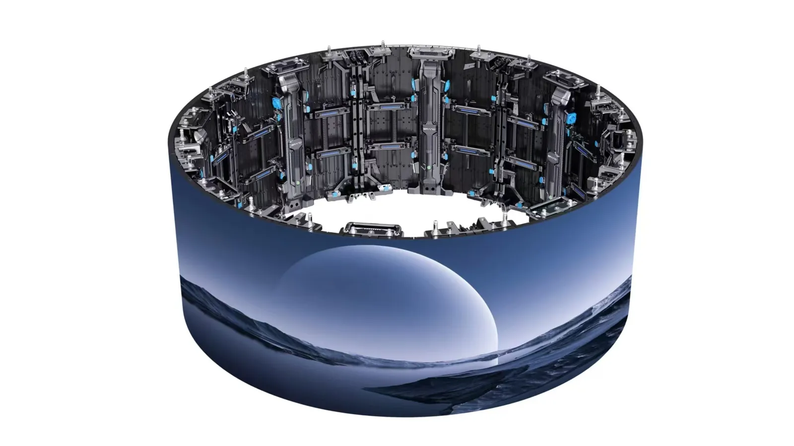

Stadium Perimeter LED Boards: Buying Guide to Refresh, Brightness and Protection
By David
What are stadium perimeter LED boards? Stadium perimeter LED boards, often just called perimeter boards, are the ring of low LED displays that show advertising, scores, and replay graphics around a sports field. These boards sit in the most demanding position in any venue: on camera, at speed, and within reach of players and weather. This guide sets out what to specify when you buy them: refresh rate for broadcast, brightness for a sunlit pitch, impact and weather protection, mounting, power and the spares that keep a perimeter working through a full season.
Nothing in a stadium works harder than the perimeter. It faces broadcast cameras at every angle, changes content dozens of times a match, and stands where a mistimed tackle, a football, or a stray ball can strike it at speed. A perimeter that fails mid-broadcast is visible to millions of viewers, which is why the specification is set by broadcast and durability rather than by price alone.
Buyers who underestimate this soon learn the lesson on camera. Banding on a slow refresh board, a visible dark module during a close-up, or a shattered panel after a goal celebration all become the story of the match rather than the sport itself.
Why Perimeter Boards Need Broadcast-Grade Displays
A perimeter board lives inside the camera frame for the whole event. Every broadcast camera, from the main gantry to the handheld on the touchline, will capture it. If the refresh rate is too low, the board shows horizontal bands on television even though it looks fine to the crowd, and those bands are the single most common complaint from broadcasters.
Broadcast also drives the brightness requirement. A high-definition broadcast camera exposes the field for the players, and the perimeter must stay bright and readable against that setting. A dim board loses its advertising value the moment the camera sets exposure for the sunlit pitch.
Refresh Rate for Perimeter Boards
Perimeter boards should run at a high refresh rate, generally 3,840 Hz or above, so that broadcast cameras do not capture flicker. Sports coverage uses fast shutter speeds to freeze action, and fast shutter speeds make banding more visible, so the perimeter needs more headroom than an indoor signage wall.
Test the board with a broadcast camera, not a phone. Record the screen at the shutter speeds the production team will use and check the footage on a large monitor. Ask the supplier for the driver IC model and scan rate, and verify the camera test before shipment, following the method in the refresh rate guide.
| Requirement | Typical Value | Why It Matters |
|---|---|---|
| Refresh rate | 3,840 Hz or above | Prevents banding on broadcast cameras |
| Brightness | 5,000 to 8,000 nits | Readable against sunlit pitch |
| Contrast treatment | Anti-glare mask | Keeps text legible in sunlight |
| Pixel pitch | P6 to P10 | Suited to the viewing distance |
| Scan rate | Fast scan driver | Clean footage at high shutter speed |
| Protection | Impact-resistant front | Survives ball and player contact |
Refresh and brightness interact with power and heat. A board running high brightness at a fast refresh draws more power and generates more heat than a signage screen, which is why outdoor perimeter cabinets need robust thermal design and adequate power distribution along the whole ring.
Figure 1 shows an indoor LED installation.

Protection From Impact, Weather, and Vandalism
Perimeter boards take physical punishment that no other display experiences. Players slide into them, balls strike them at high speed, and ground staff move equipment past them every day. Specify an impact-resistant front surface and a frame that can absorb contact without cracking the module behind it.
Outdoor perimeters must also survive rain, wind, and temperature swings. Confirm the ingress protection rating, the wind load rating for the mounting structure, and the drainage design that keeps water away from the electronics when the board sits directly on the ground.
✅ 3,840 Hz or higher refresh rate
✅ 5,000 to 8,000 nit brightness
✅ Impact-resistant front surface
✅ High ingress protection and wind rating
✅ Broadcast camera test before shipment
Mounting, Ballast, and Ground Conditions
A perimeter board is often free-standing, held in place by ballast weights rather than by fixings into the ground. The ballast design must resist wind load while still allowing staff to move sections when the pitch layout changes for a different sport or a concert.
Check how the ground anchors or ballast interacts with the playing surface and with any underground heating or drainage. A mounting method that damages the pitch or blocks a drainage channel creates a problem that outlasts the display itself, and sports ground managers will not accept it.
Figure 2 shows an indoor LED installation.

Content, Sponsorship, and Match Operations
The perimeter is a sponsorship asset, so the control system must handle scheduled advertising rotations, live score updates, and instant switching between content sources. Sponsors pay for guaranteed exposure, which means the system has to prove that each advert ran the agreed number of times.
Specify a control system with logging that records what played and when. That log is the evidence behind a sponsorship contract, and it also helps the venue diagnose a fault. Coordinate the content formats with the sponsors early, because an advert supplied in the wrong aspect ratio looks unprofessional on a national broadcast.
Venue Risks and Controls
| Venue Risk | Consequence | Control |
|---|---|---|
| Ball or player impact | Cracked module, dark section | Impact-resistant front and spare cabinet |
| Heavy rain on outdoor ring | Water ingress and corrosion | High ingress rating and drainage |
| Wind load on free-standing board | Board moves or falls | Ballast design to wind rating |
| Voltage drop across long ring | Far end dims or fails | Multiple power injection points |
| Single signal path failure | Whole side goes dark | Redundant signal routing |
| High brightness on hot day | Heat build-up and derating | Thermal design and power headroom |
Designing for Different Sports and Formats
A perimeter that suits football may not suit a concert or a motorsport event. Football needs low boards along the touchline, while a concert may need a much taller wall behind the stage, and a motorsport circuit needs barriers that meet a completely different safety code. If the venue hosts more than one sport, design the ring so sections can be added, removed, or reconfigured between events without rebuilding the whole system.
Reconfiguration has to be practical, not theoretical. A section that takes a crew of six and a crane to move will never be adjusted between fixtures, so the design should let ground staff reposition boards with normal equipment. Test the reconfiguration during commissioning and time it, then decide whether the venue can realistically host a second format without added labor.
Commissioning and Match-Day Trials
Commission a perimeter with a full rehearsal, not a quick power-up. Run the advertising rotation, the score feed, and a live camera test at the same time, exactly as they will run on match day, and watch for banding, dropped sections, or a lag between the scoreboard and the perimeter. Problems that appear in a rehearsal are cheap to fix, while the same problem during a broadcast becomes a permanent video clip.
Invite the broadcaster's technical team to the trial if the venue has one. They will spot camera issues that a venue engineer may miss, and their sign-off protects both parties if a question arises later. Record the trial results and keep them with the commissioning file, so the venue has evidence of the standard the system met when it was new.
Power, Cabling, and Venue Infrastructure
A full perimeter ring is a long electrical run, and voltage drop across the ring can cause the far end to dim or fail. Design the power distribution with enough injection points to keep every section at equal brightness, and protect the circuits against the surges that outdoor venues experience.
Signal distribution needs the same care. A ring that loses one data path can darken a whole side of the pitch, so redundant signal paths and a clear cabling route that avoids the touchline and the players' area are both essential. Plan the cable route with the ground staff before installation begins.
✅ Every section at equal brightness
✅ Redundant signal path around the ring
✅ Ballast and wind rating confirmed
✅ Spare modules on site for fast swap
✅ Sponsorship playout log verified
Service and Spares During the Season
Sports seasons are unforgiving. A board cannot fail on match day, so the venue should hold spare modules, power supplies, and a section of spare cabinet that staff can swap between fixtures. The service plan should schedule maintenance for the days between matches and complete all checks before the next kick-off.
Train the ground staff to identify and replace a failed module quickly. A venue that can swap a module in twenty minutes rarely misses a fixture, while one that waits for a technician from another city will eventually darken a section during a broadcast, as covered in the field service guide and the spare parts guide.
- Require 3,840 Hz or higher and confirm with a camera test
- Choose brightness for the sunlit pitch, not the shaded stand
- Specify impact-resistant fronts and high ingress protection
- Design ballast and anchoring around the pitch and drainage
- Plan power injection points across the full ring
- Keep spare modules and a spare cabinet section on site
Choosing a Perimeter Board Supplier and Products
Perimeter boards have to be supported by a supplier who understands broadcast deadlines. Ask how the boards are tested before shipment, whether the supplier will support a match-day trial, and what spare sections and modules will be held at the venue. Response time is measured against the match calendar, not the working week, so the spare parts plan should be agreed before the contract is signed.
Match the product to the venue. For a permanent outdoor ring facing a sunlit pitch, a high-brightness outdoor cabinet such as the D-PRO outdoor series (P5 to P10, up to 10,000 cd/m², front maintenance) gives the brightness headroom described above. For event and touring perimeters that are installed and removed between fixtures, the COB ZH series lists a sealed flip-chip COB face, 7,680 Hz or higher refresh, 4,000 cd/m² and wind resistance up to 20 m/s. Confirm impact protection, mounting frame and ballast for your sport on the quotation.
For how perimeter boards fit with the big screen and concourse displays at a football ground, see our football stadium LED screens guide; for brightness planning across a venue, see the sports venue brightness guide; and for banding on broadcast, see why LED screens flicker on camera. When you are ready, send us your sport, pitch layout and broadcast requirements.
FAQ
Sources and Further Reading
Related Articles
Products for perimeter work: D-PRO outdoor series for permanent rings and COB ZH series for event and touring perimeters.
Spec a Stadium Perimeter
Send us your sport, pitch layout, and broadcast requirements, and we will propose refresh, brightness, and protection.
Request Perimeter SpecChat on WhatsApp